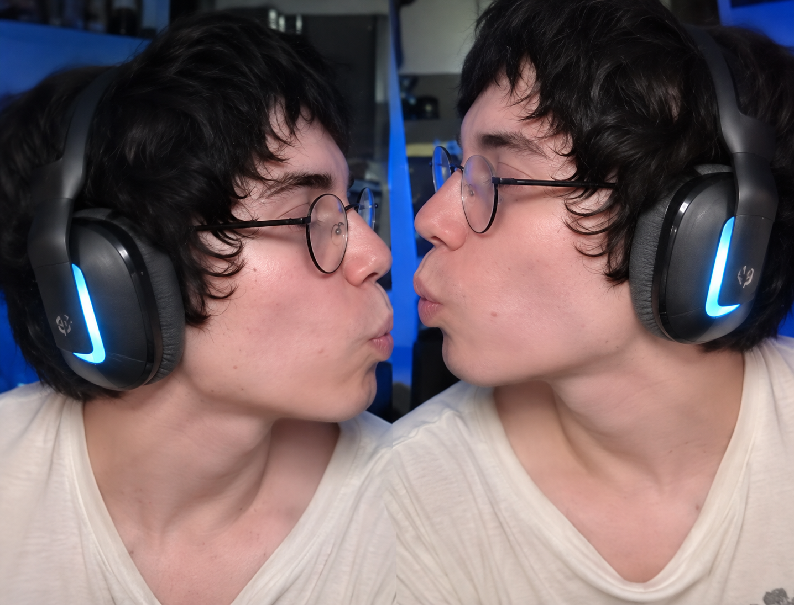
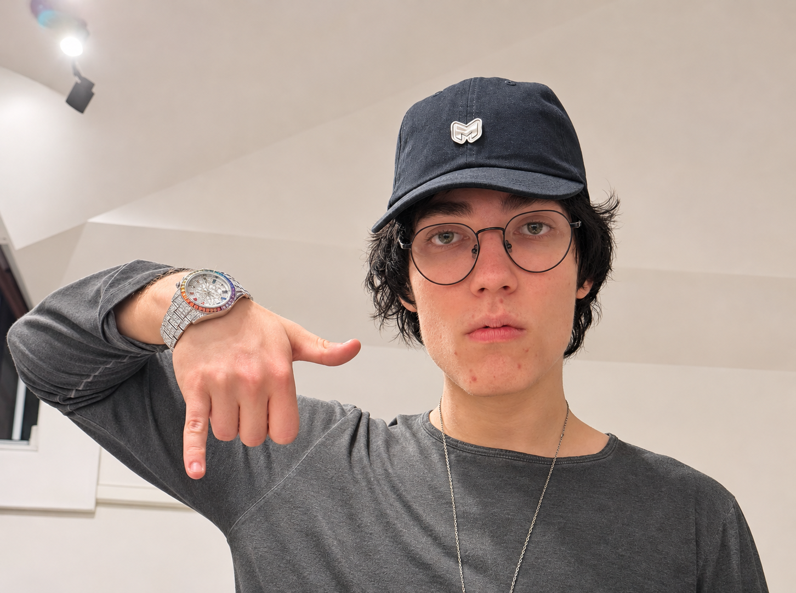
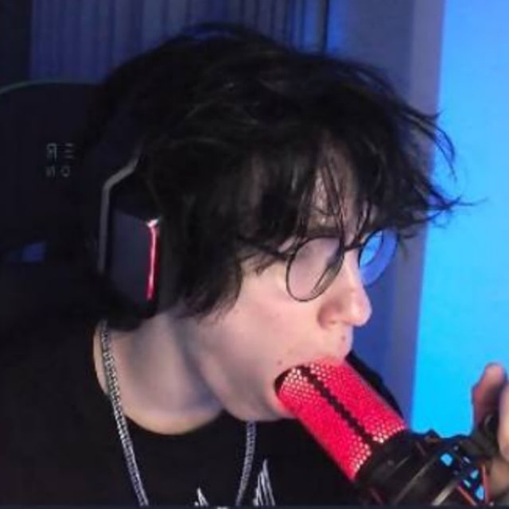

ЗАХОДИ, ЕСЛИ
НЕ БОИШЬСЯ.
Немного хаоса. Немного жути. Много меня.



Тебя тут не хватает
ПЕРЕЙТИ В КАНАЛ@MaloyCser2 · по ту сторону всё интереснее
Кадры из жизни
Фотографии из публичного Telegram-канала MaloyCSer.
Источник фотографий: Telegram MaloyCSer ↗Алексей Артюхов / MaloyCSer
О человеке по ту сторону экрана.
Алексей Артюхов известен в интернете под псевдонимом MaloyCSer — Малой КСер. Его публичная деятельность связана с прямыми эфирами и видеоконтентом. Под этим ником представлены его стримерские профили на Twitch и KICK.
Путь в стриминге
Согласно TwitchTracker, канал MaloyCSer на Twitch создан 11 мая 2020 года, язык канала — русский. Эта дата относится к регистрации канала и не означает дату первого эфира. На KICK также существует канал MaloyCSer с записями трансляций и клипами.
Влоги и жизнь вне эфира
В публичном Telegram-канале Алексей делится фотографиями, короткими видео и анонсами. Среди публикаций есть история поездки в Париж и анонс влога «VipeRR TOUR open — PARIS», который он представил как свой первый влог. Это ещё одна сторона его контента — события и поездки за пределами стримов.
Где ещё найти MaloyCSer
В разделе About канала KICK указаны Instagram alex.artikov, YouTube @MaloyCSer1337 и TikTok maloycser322. Там можно найти его собственные публикации и видео.
Где родился и вырос
Достоверные сведения о месте рождения, городе детства, образовании и ранних годах Алексея в найденных открытых источниках не подтверждены. Поэтому эти детали здесь не приводятся. Доступных проверенных данных пока недостаточно для полной биографии.